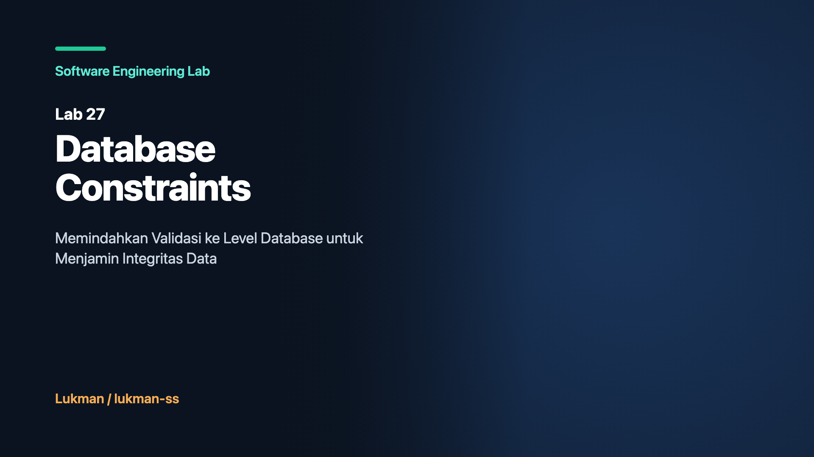

Dalam rekayasa perangkat lunak modern, terdapat kecenderungan kuat di kalangan pengembang backend untuk memusatkan seluruh logika bisnis dan validasi data di dalam lapisan kode aplikasi (application layer). Pola ini kerap dipromosikan atas nama arsitektur bersih, portabilitas database, dan kemudahan pengujian unit tanpa dependensi database eksternal.
Salah satu pola yang paling umum dijumpai dalam proses registrasi pengguna atau pembuatan entitas baru adalah pola check-then-act:
// Pola check-then-act pada application layer
func (s *UserService) RegisterUser(email, username string) error {
existingUser, err := s.userRepo.FindByEmail(email) // 1. Check (SELECT)
if err == nil && existingUser != nil {
return ErrEmailAlreadyRegistered
}
// Terdapat celah latensi I/O jaringan atau context switch di sini
return s.userRepo.Insert(email, username) // 2. Act (INSERT)
}Secara sekuensial pada pengujian unit lokal, kode di atas berjalan sempurna. Ketika pengguna memasukkan email yang sudah terdaftar, fungsi FindByEmail menemukan record tersebut dan mengembalikan error ramah pengguna. Namun, asumsi sekuensial ini langsung runtuh seketika sistem menerima lalu lintas konkurensi di lingkungan produksi.
Ketika dua request dengan email yang sama tiba pada waktu yang hampir bersamaan di dua goroutine atau dua instance container microservice yang berbeda, kedua request tersebut akan mengeksekusi langkah SELECT secara bersamaan. Keduanya membaca bahwa email belum ada di database. Akibatnya, kedua goroutine melanjutkan eksekusi ke langkah INSERT. Tanpa adanya proteksi pada tingkat database, kedua baris data tersebut berhasil disimpan ke tabel. Database kini berada dalam kondisi korup: terdapat duplikasi record yang melanggar aturan bisnis paling mendasar.
Lab 27 dari seri Software Engineering Lab bertujuan membuktikan fenomena race condition ini secara empiris dan mendemonstrasikan bagaimana mendelegasikan validasi ke Database Constraints (NOT NULL, CHECK, UNIQUE, FOREIGN KEY, dan Partial Unique Index) mampu memberikan proteksi atomik absolut pada titik penyimpanan data.
Untuk memahami bahaya dari ketergantungan eksklusif pada validasi aplikasi, mari kita bedah skenario kegagalan nyata yang sering dihadapi sistem e-commerce dan financial technology.
Seorang pengguna menekan tombol pendaftaran pada aplikasi web, namun karena koneksi seluler yang lambat, antarmuka tampak tidak merespons. Pengguna menekan tombol "Daftar" untuk kedua kalinya dalam rentang 15 milidetik. Browser mengirimkan dua HTTP POST request paralel ke load balancer. Dua server aplikasi menerima request tersebut:
SELECT id FROM users WHERE email = 'andi@example.com'. Hasil: Not Found.SELECT id FROM users WHERE email = 'andi@example.com'. Hasil: Not Found.INSERT INTO users (email, balance) VALUES ('andi@example.com', 100000). Sukses, ID = 101.INSERT INTO users (email, balance) VALUES ('andi@example.com', 100000). Sukses, ID = 102.Hasil akhirnya: akun Andi terdaftar dua kali dengan bonus saldo pendaftaran awal digandakan menjadi 200.000. Ketika sistem downstream memproses transaksi login berikutnya dengan query tunggal SELECT * FROM users WHERE email = 'andi@example.com', driver ORM melempar error MultipleRowsFoundException, melumpuhkan akses pengguna tersebut secara permanen.
Masalah referential integrity terjadi ketika pesanan dibuat untuk pengguna yang sebenarnya tidak ada atau baru saja dihapus. Jika aplikasi hanya melakukan verifikasi dalam memori:
// Aplikasi memverifikasi user ada di memory cache
if userCache.Exists(order.UserID) {
// Tiba-tiba user dihapus oleh admin di thread lain
db.InsertOrder(order) // Menghasilkan orphan order row!
}Tanpa FOREIGN KEY constraint yang ditegakkan oleh storage engine, baris order tersebut tersimpan tanpa asosiasi pengguna yang valid. Saat laporan penagihan bulanan dijalankan via query JOIN users ON orders.user_id = users.id, baris pesanan tersebut hilang dari laporan keuangan (hilang dari perhitungan pendapatan).
Solusi yang dirancang pada Lab 27 membagi sistem menjadi arsitektur berlapis yang membedakan secara tegas antara representasi model domain, simulator storage engine yang menerapkan semantik relasional PostgreSQL, lapisan error taxonomy Class 23 ANSI SQLSTATE, serta pembanding antara implementasi tidak aman (UnsafeStore) dan implementasi aman (SafeStore).
┌────────────────────────────────────────────────────────┐
│ cmd/demo/main.go │
│ (Orkestrasi Uji Konkurensi 50 Goroutine) │
└───────────────────────────┬────────────────────────────┘
│
┌─────────────┴─────────────┐
▼ ▼
┌───────────────────────────┐ ┌───────────────────────────┐
│ UnsafeStore (Store) │ │ SafeStore (Store) │
│ - Scan memori aplikasi │ │ - Delegasi langsung │
│ - Sleep 1ms (I/O latency)│ │ - Tangkap SQLSTATE 23xxx │
│ - Bypassed constraint │ │ - Map ke Domain Error │
└─────────────┬─────────────┘ └─────────────┬─────────────┘
│ │
▼ ▼
┌────────────────────────────────────────────────────────┐
│ Engine (internal/engine) │
│ - Thread-Safe via sync.RWMutex │
│ - Urutan Evaluasi: NOT NULL → CHECK → UNIQUE → FK │
│ - B-tree Unique Index & Partial Index Simulation │
└───────────────────────────┬────────────────────────────┘
│
┌─────────────┴─────────────┐
▼ ▼
┌───────────────────────────┐ ┌───────────────────────────┐
│ model (Domain) │ │ dberr (Taxonomy) │
│ - User struct │ │ - SQLState 23502 (NOT NULL)│
│ - Order struct │ │ - SQLState 23514 (CHECK) │
│ - Soft Delete timestamp │ │ - SQLState 23505 (UNIQUE) │
│ │ │ - SQLState 23503 (FK) │
└───────────────────────────┘ └───────────────────────────┘PostgreSQL, SQLite, dan standar ANSI SQL mengklasifikasikan seluruh kegagalan integritas data ke dalam kode standar Class 23 (Integrity Constraint Violation). Kode-kode ini bersifat stabil lintas rilis database dan tidak terpengaruh oleh lokalisasi bahasa pesan error sistem:
| SQLSTATE Code | Nama Pelanggaran | Karakteristik Pemeriksaan | Pemetaan Respons HTTP API |
|---|---|---|---|
23502 |
NOT NULL Violation | Kolom wajib (email, username, user_id) tidak boleh bernilai kosong atau null. | 400 Bad Request |
23514 |
CHECK Violation | Evaluasi predikat logika boolean pada baris data (age >= 18, status valid). | 422 Unprocessable Entity |
23505 |
UNIQUE Violation | Kunci duplikat terdeteksi pada indeks B-tree saat INSERT/UPDATE. | 409 Conflict |
23503 |
FOREIGN KEY Violation | Entitas referensi tidak ditemukan di tabel induk (mencegah orphan record). | 409 Conflict |
23P01 |
Exclusion Violation | Pelanggaran indeks eksklusi PostgreSQL (misal: reservasi waktu bertumpuk). | 409 Conflict |
Mari kita telaah implementasi teknis pada codebase Lab 27, dimulai dari struktur data domain, evaluator engine, hingga domain error mapping.
Domain model merepresentasikan entitas pengguna dan pesanan. Pengguna memiliki kolom audit soft delete DeletedAt:
package model
import "time"
type User struct {
ID int64
Email string
Username string
Age int
Status string // active, suspended, pending
DeletedAt *time.Time
}
type Order struct {
ID int64
UserID int64
TotalCents int64
Status string
}Kunci dari pencegahan race condition adalah penahanan lock mutlak (e.mu.Lock()) yang mencakup seluruh proses validasi dan penulisan baris ke dalam storage map. Tidak ada ruang jeda di mana goroutine lain dapat menyusup:
func (e *Engine) InsertUser(u model.User, usePartialUniqueIndex bool) (model.User, error) {
e.mu.Lock()
defer e.mu.Unlock()
// 1. NOT NULL Constraint Verification
if u.Email == "" {
return model.User{}, dberr.NewNotNullViolation("users", "email", "users_email_not_null")
}
if u.Username == "" {
return model.User{}, dberr.NewNotNullViolation("users", "username", "users_username_not_null")
}
// 2. CHECK Constraints Verification
if u.Age < 18 {
return model.User{}, dberr.NewCheckViolation("users", "users_age_check",
fmt.Sprintf("value %d for column 'age' violates check constraint (age >= 18)", u.Age))
}
switch u.Status {
case "active", "suspended", "pending":
default:
return model.User{}, dberr.NewCheckViolation("users", "users_status_check",
fmt.Sprintf("invalid status %q violates check constraint", u.Status))
}
// 3. UNIQUE vs PARTIAL UNIQUE Index Verification
if usePartialUniqueIndex {
// Hanya cek keunikan jika data berstatus aktif (DeletedAt == nil)
if u.DeletedAt == nil {
if existingID, exists := e.activeEmails[u.Email]; exists {
return model.User{}, dberr.NewUniqueViolation("users", "users_active_email_idx",
fmt.Sprintf("duplicate email=%s in active index, existing_id=%d", u.Email, existingID))
}
}
} else {
// Full UNIQUE: semua email harus unik tanpa memandang status
if existingID, exists := e.emailIndex[u.Email]; exists {
return model.User{}, dberr.NewUniqueViolation("users", "users_email_key",
fmt.Sprintf("duplicate email=%s, existing_id=%d", u.Email, existingID))
}
}
// Alokasi ID dan Komit ke Index
if u.ID == 0 {
u.ID = e.userSeq.Add(1)
}
e.users[u.ID] = u
if !usePartialUniqueIndex {
e.emailIndex[u.Email] = u.ID
} else if u.DeletedAt == nil {
e.activeEmails[u.Email] = u.ID
}
return u, nil
}Ketika pesanan dibuat, engine memverifikasi keberadaan user_id di dalam tabel induk users secara atomik:
func (e *Engine) InsertOrder(o model.Order) (model.Order, error) {
e.mu.Lock()
defer e.mu.Unlock()
if o.UserID == 0 {
return model.Order{}, dberr.NewNotNullViolation("orders", "user_id", "orders_user_id_not_null")
}
if o.TotalCents <= 0 {
return model.Order{}, dberr.NewCheckViolation("orders", "orders_total_cents_check",
fmt.Sprintf("total_cents %d must be greater than zero", o.TotalCents))
}
// Foreign Key Check
if _, exists := e.users[o.UserID]; !exists {
return model.Order{}, dberr.NewForeignKeyViolation("orders", "fk_orders_user",
fmt.Sprintf("key (user_id)=(%d) is not present in table \"users\"", o.UserID))
}
if o.ID == 0 {
o.ID = e.orderSeq.Add(1)
}
e.orders[o.ID] = o
return o, nil
}Pesan error teknis database tidak boleh bocor secara mentah ke antarmuka klien API publik. Fungsi MapToDomainError mengonversi kode SQLSTATE menjadi format pesan bisnis yang aman dengan menyertakan nama aturan constraint yang dilanggar:
func MapToDomainError(err error) error {
var cErr *ConstraintError
if errors.As(err, &cErr) {
switch cErr.Code {
case SQLStateUniqueViolation:
return fmt.Errorf("conflict: resource with this unique attribute already exists (rule: %s)", cErr.ConstraintName)
case SQLStateNotNullViolation:
return fmt.Errorf("invalid input: mandatory field is missing (rule: %s)", cErr.ConstraintName)
case SQLStateCheckViolation:
return fmt.Errorf("validation failed: value outside permissible boundary (rule: %s)", cErr.ConstraintName)
case SQLStateForeignKeyViolation:
return fmt.Errorf("reference error: referenced entity does not exist (rule: %s)", cErr.ConstraintName)
default:
return fmt.Errorf("database integrity violation: %s", cErr.Detail)
}
}
return err
}Validitas arsitektur ini diuji secara ketat menggunakan test suite otomatis yang dijalankan bersama Go race detector (go test -v -race ./...). Hasil pengujian membuktikan perilaku kedua store secara deterministik.
=== RUN TestNotNullConstraints
--- PASS: TestNotNullConstraints (0.00s)
=== RUN TestCheckConstraints
--- PASS: TestCheckConstraints (0.00s)
=== RUN TestUniqueConstraint
--- PASS: TestUniqueConstraint (0.00s)
=== RUN TestForeignKeyConstraint
--- PASS: TestForeignKeyConstraint (0.00s)
=== RUN TestPartialUniqueIndex
--- PASS: TestPartialUniqueIndex (0.00s)
=== RUN TestConcurrentRegistration_Safe_EnforcesUniqueness
--- PASS: TestConcurrentRegistration_Safe_EnforcesUniqueness (0.00s)
=== RUN TestConcurrentRegistration_Unsafe_SuffersRaceCondition
--- PASS: TestConcurrentRegistration_Unsafe_SuffersRaceCondition (0.00s)
=== RUN TestErrorClassification
--- PASS: TestErrorClassification (0.00s)
PASS
ok github.com/lukman/software-engineering-lab/labs/27-database-constraints/internal/store 1.031sDalam fungsi pengujian TestConcurrentRegistration_Safe_EnforcesUniqueness, sebanyak 20 goroutine dijalankan serentak untuk mendaftarkan akun dengan alamat email yang persis sama (race-safe@example.com). Hasilnya:
Sebaliknya, pada TestConcurrentRegistration_Unsafe_SuffersRaceCondition dengan 20 goroutine yang sama pada UnsafeStore:
Program demo memperbesar skala konkurensi menjadi 50 goroutine secara simultan:
=== SOFTWARE ENGINEERING LAB 27: DATABASE CONSTRAINTS ===
[DEMO 1] UnsafeStore under 50 Concurrent Goroutines:
Total Goroutines Attempted: 50
Successful Registrations: 38
Users in Database: 38 (CRITICAL: Duplicate Emails Detected!)
[DEMO 2] SafeStore under 50 Concurrent Goroutines:
Total Goroutines Attempted: 50
Successful Registrations: 1
Rejected (SQLSTATE 23505): 49
Users in Database: 1 (SUCCESS: Data Integrity Guaranteed!)
[DEMO 3] Partial Unique Index with Soft Delete:
User 'alice@corp.com' registered successfully (ID: 1).
Duplicate active registration rejected (SQLSTATE 23505).
User ID 1 marked as soft-deleted (deleted_at set).
New active registration for 'alice@corp.com' SUCCEEDED (ID: 2)!
Active user count: 1. Total user records: 2.Tabel berikut menyajikan perbandingan komprehensif antara pendekatan yang hanya mengandalkan validasi aplikasi versus pendekatan pertahanan berlapis dengan database constraints:
| Dimensi Evaluasi | Sebelum (Hanya Validasi Aplikasi) | Sesudah (Aplikasi + Database Constraints) |
|---|---|---|
| Resistensi Konkurensi | Rentan terhadap race condition akibat jeda waktu antara SELECT dan INSERT. | Kebal terhadap race condition karena evaluasi dilakukan atomik di storage lock. |
| Konsistensi Multi-Service | Bypassable: service lain atau batch job yang lupa memvalidasi dapat merusak data. | Universal: aturan skema ditegakkan seragam siapapun klien yang menulis data. |
| Penanganan Soft Delete | Query aplikasi rumit, rawan bug logika saat memeriksa record aktif vs non-aktif. | Elegan via Partial Unique Index (WHERE deleted_at IS NULL). |
| Deteksi Kesalahan | Rentan error parsing regex teks string pesan error driver database. | Deterministik menggunakan inspeksi kode ANSI SQLSTATE Class 23. |
| Biaya Pemulihan | Sangat mahal: membutuhkan skrip deduplikasi dan rekonsiliasi manual di produksi. | Nol: data duplikat ditolak seketika pada titik penulisan transaksi. |
| Beban I/O Database | Selalu melakukan query SELECT tambahan sebelum setiap operasi penulisan. | Langsung eksekusi INSERT; database memeriksa indeks B-tree secara internal. |
Meskipun database constraints adalah fondasi wajib bagi integritas data, seorang arsitek sistem harus memahami batasan teknis dan trade-off yang menyertainya:
CHECK constraint di PostgreSQL hanya dapat mengevaluasi kolom di dalam baris yang sedang diproses. CHECK tidak dapat mengeksekusi subquery ke tabel lain atau menghitung agregat lintas baris (misalnya: "total saldo tabungan tidak boleh melebihi 1 miliar rupiah"). Aturan lintas baris atau lintas tabel seperti ini memerlukan trigger database atau isolasi transaksi tingkat SERIALIZABLE dengan mekanisme retry pada error 40001.
Salah satu perangkap umum di PostgreSQL adalah bahwa mendefinisikan FOREIGN KEY (user_id) REFERENCES users(id) tidak secara otomatis membuat indeks pada kolom orders.user_id. Akibatnya, integritas relasional memang terlindungi, namun ketika baris di tabel users dihapus atau diperbarui, database harus melakukan sequential table scan penuh pada tabel orders. Pengembang wajib menambahkan indeks manual pada setiap kolom referencing foreign key.
Query planner PostgreSQL hanya akan memanfaatkan partial unique index jika klausa WHERE pada query cocok secara persis dengan predikat indeks. Planner tidak dapat mengenali ekspresi logika yang secara matematis ekuivalen tetapi ditulis dengan sintaks berbeda. Selain itu, partial index tidak dapat digunakan pada query dengan prepared statement parameter dinamis jika nilainya tidak statis saat perencanaan.
Simulator engine pada Lab 27 menggunakan in-memory Go maps dengan proteksi sync.RWMutex. Implementasi ini menggunakan coarse-grained table locking demi kemudahan membaca kode tanpa dependensi eksternal, bukan row-level B-tree page latches atau Multi-Version Concurrency Control (MVCC) internal seperti pada PostgreSQL produksi. Engine ini dirancang untuk pembuktian konsep arsitektural, bukan untuk benchmark throughput I/O disk.
Kombinasi antara validasi aplikasi dan database constraints harus diterapkan dengan panduan proporsional berikut:
FOREIGN KEY.Seluruh materi, diagram arsitektur, kode sumber, dan pengujian unit pada Lab 27 dapat diakses secara publik pada repositori proyek resmi:
bdb285d35a71c9a309e83a0e4497b9dbd842ceb8go test -v -race ./...go run ./cmd/demo